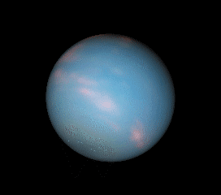

- Uranus is the seventh planet from the Sun. Its name is a reference to the Greek god of the sky, Uranus, who, according to Greek mythology, was the great-grandfather of Ares (Mars), grandfather of Zeus (Jupiter) and father of Cronus (Saturn).
- It has the third-largest planetary radius and fourth-largest planetary mass in the Solar System. Uranus is similar in composition to Neptune, and both have bulk chemical compositions which differ from that of the larger gas giants Jupiter and Saturn. For this reason, scientists often classify Uranus and Neptune as "ice giants" to distinguish them from the other giant planets.
- Uranus's atmosphere is similar to Jupiter's and Saturn's in its primary composition of hydrogen and helium, but it contains more "ices" such as water, ammonia, and methane, along with traces of other hydrocarbons.[16] It has the coldest planetary atmosphere in the Solar System, with a minimum temperature of 49 K (−224 °C; −371 °F), and has a complex, layered cloud structure with water thought to make up the lowest clouds and methane the uppermost layer of clouds.[16] The interior of Uranus is mainly composed of ices and rock.
- Like the other giant planets, Uranus has a ring system, a magnetosphere, and numerous moons.
-

- click here For More deatils